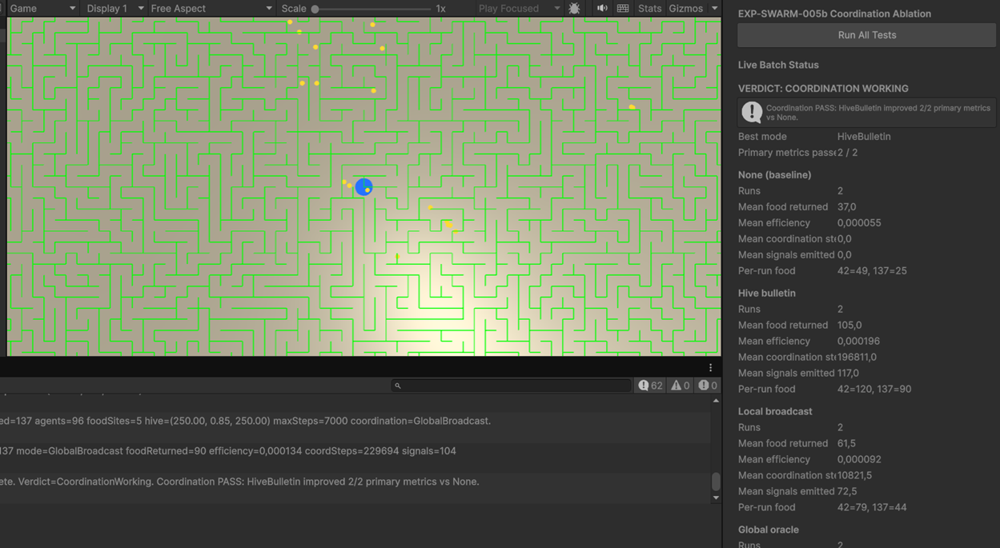

Unity scenes
Preset scenes under Assets/Scenes/ (formerly a single SampleScene.unity).
| Scene | Experiment | Runners | Notes |
|---|---|---|---|
Assets/Scenes/EXP-005.unity | EXP-005 | Experiment005Runner (FrontierClaim, LocalRrt) | Renamed from Assets/Scenes/SampleScene.unity |
Assets/Scenes/EXP-SWARM-005.unity | EXP-SWARM-005 / EXP-SWARM-005b | ExperimentSwarm004Runner + ExperimentSwarmCoordinationAblationHarness |
EXP-005 — Frontier Claim Visual Observation
1. Research Question
Does the FrontierClaim communication mode produce visibly distinct, slowly expanding exploration territories when multiple agents explore the same maze under partial observability?
This session was not a controlled ablation. It was a live visual check of whether claim-guided agents spread outward from stratified starts instead of collapsing into one crowded region.
2. Protocol Summary
- Open
Assets/Scenes/EXP-005.unity(formerlySampleScene.unity). - Enable
Experiment005RunneronMazeSystem; disable competing experiment runners. - Set Communication Mode to
FrontierClaim, Algorithm toLocalRrt, Agent Count to 10. - Enter Play mode and watch the Game view over time.
- No CSV batch was run for this session; evaluation was by eye only.
- Capture one late-episode screenshot for the journal (
docs/journal/screenshots/scr2.png).
3. Configuration
| Parameter | Value (from screenshot / Inspector) |
|---|---|
| Runner | Experiment005Runner |
| Communication mode | FrontierClaim |
| Algorithm | LocalRrt |
| Agent count | 10 |
| Maze size | 28 × 28 |
| Frontier claim radius | 10 cells |
| Frontier claim TTL | 36 steps |
| Frontier claim avoidance weight | 10 |
| Frontier claim expansion weight | 0.35 |
| Signal decay per step | 0.995 |
| Signal follow chance | 0.45 |
| Signal crowding penalty | 0.65 |
| Stigmergy field visible | yes (showStigmergyField) |
Each agent is drawn with a distinct color (cyan, magenta, yellow, orange, and others from the runner palette). Deposited smell and visited trails tint the maze floor in that agent’s color, so territorial spread is readable at a glance.
4. Results
Quantitative metrics
None recorded for this session.
Experiment005MetricsLogger exists and can write results/experiment_005_multi_agent_signals.csv, but this run was not logged as a formal episode batch. The bottom status bar showed live counters (e.g. frontier conflicts, per-agent claim/trail hints) during Play mode; those values were not saved or averaged.
Qualitative observations (visual, in dynamics)

Figure: Late-episode Game view (2026-06-20). Agents leave color-coded trails and claim regions on a 28×28 maze. Source: docs/journal/screenshots/scr2.png
Watching the simulation over time:
- Agents explore slowly, extending colored corridors and patches into unexplored green maze space rather than jumping instantly across the map.
- Territories remain visually separable: cyan, magenta, yellow, and orange regions occupy different branches and wings of the maze, consistent with per-agent responsibility claims and avoidance of peers’ claimed frontiers.
- Expansion is gradual and outward: trails lengthen along corridors; local blobs are less dominant than in early FrontierClaim prototypes (smell deposited once per cell, farthest-tier frontier preference).
- A bright goal marker sits near the maze centre; at the time of the screenshot, exploration had not yet converged on a single team completion event (typical for a mid/late visual check, not a timed success run).
- Overlap and conflict appear in places where corridors narrow or two agents approach the same junction — expected under claim radius overlap; the HUD reported non-zero frontier conflict activity during the session.
Informal takeaway: FrontierClaim produces readable, color-coded territorial expansion suitable for qualitative inspection. This does not prove coordination benefit over EXP-004 None or other EXP-005 modes without a seeded CSV comparison.
5. Interpretation
The run supports the visual design goal of EXP-005 FrontierClaim: multiple agents can co-explore one maze while leaving distinguishable, slowly growing regions. Claim refresh, stratified starts, and peer-avoidance appear to reduce the “single crowded blob near spawn” failure mode described in earlier project notes.
Because no metrics were collected, we cannot say whether coverage, overlap, time-to-first-goal, or claim efficiency improved versus baselines. The session is evidence that the phenomenon is observable and worth measuring, not that FrontierClaim works in a scientific sense.
6. Limitations
- Single anecdotal Play-mode session; no fixed seed documentation in this report.
- No CSV export, no repeat runs, no comparison to
None,Trail, or EXP-004. - Visual judgment only — easy to over-interpret pleasing color patterns as coordination.
- Screenshot is one time slice; dynamics mattered more than the still frame.
- Goal-reaching and team success were not validated quantitatively here.
7. Decision Gate
| Question | Answer |
|---|---|
| Reproducible? | Partially — same runner/settings should reproduce similar visuals; seed not recorded for this entry. |
| Metrics trustworthy? | N/A — no metrics captured. |
| Beats or clarifies baselines? | Unknown — visual only. |
| Failure modes understood? | Partially — junction overlap and slow expansion observed; not counted. |
| Next experiment justified? | Yes — follow with seeded CSV runs across communication modes. |
Decision: Treat as visual validation only. Proceed to quantitative EXP-005 ablation when ready; do not treat this screenshot as proof of coordination benefit.
8. Recommended Next Step
- Run seeded episodes (e.g. seed 42) for
None,Trail, andFrontierClaimwith metrics logging enabled. - Log team coverage %, overlap %,
frontier_claims_created,claim_conflicts, andsteps_to_first_goal. - Capture paired screenshots at matched step counts for the journal.
- Compare against EXP-004 on the same seed before advancing to EXP-006.
9. Artifacts
- Screenshot (2026-06-20):
docs/journal/screenshots/scr2.png - Unity scene:
Assets/Scenes/EXP-005.unity - Markdown: this file
- HTML: ../index.html#exp-005-frontier-claim-visual-2026-06-20
- Optional future CSV:
results/experiment_005_multi_agent_signals.csv(not produced in this session)
EXP-SWARM-005 — Scent Trail Ablation
1. Research Question
Do decaying scent trails improve bee-hive foraging compared to the same swarm without trails, as measured by food return, foraging efficiency, time to first food, and revisit ratio?
2. Protocol Summary
- Open
Assets/Scenes/EXP-SWARM-005.unity. - Disable
Auto Start On Playon the foraging runner. - Confirm
ExperimentSwarmTrailAblationHarnessis onMazeSystem. - Press Run All Tests in Play mode.
- Harness runs four episodes automatically:
- seed 42, scent off
- seed 42, scent on
- seed 137, scent off
- seed 137, scent on SwarmTrailAblationEvaluatorcompares means and assigns verdict.
Pass criteria (automated):
- Trail runs must show scent deposits and scent-influenced steps > 0.
- At least 2 of 3 primary metrics must improve:
- mean food returned ≥ +5%
- mean foraging efficiency ≥ +5%
- mean time to first food ≥ +10% (lower is better)
- Mean revisit ratio must not worsen by more than +5%.
3. Configuration
| Parameter | Value |
|---|---|
| Agent count | 96 |
| Max steps | 7000 |
| Food sites | 5 |
| Food units per site | 24 |
| Total food target | 120 returns |
| Test seeds | 42, 137 |
| Scent enabled runs | enableScentTrails = true |
| Default scent weight | 10 |
| Return trail deposit | 1.4 |
| Food discovery deposit | 2.5 |
| Scent decay per step | 0.985 |
Baseline context: EXP-SWARM-004 foraging was visually validated earlier (agents discover red food, return to blue hive).
4. Results
Without trails (baseline)
| Metric | Value |
|---|---|
| Runs | 2 |
| Mean food returned | 37.0 / 120 |
| Mean foraging efficiency | 0.000055 |
| Mean time to first food | 863 steps |
| Mean revisit ratio | 0.999 |
| Mean scent deposits | 0.0 |
| Mean scent-influenced steps | 0.0 |
Per-run food returned: seed 42 = 49, seed 137 = 25
Per-run efficiency: seed 42 = 0.000073, seed 137 = 0.000037
With trails (treatment)
| Metric | Value |
|---|---|
| Runs | 2 |
| Mean food returned | 31.5 / 120 |
| Mean foraging efficiency | 0.000047 |
| Mean scent deposits | > 0 (trails active) |
| Mean scent-influenced steps | > 0 (trails active) |
Trails were biologically active in code (deposits and steering occurred) but underperformed the baseline on primary task metrics.
Deltas and verdict
| Delta (with vs without) | Approx. change |
|---|---|
| Food returned | −14.9% (worse) |
| Foraging efficiency | −14.5% (worse) |
| Primary metrics passed | 0 / 2 |
Automated verdict: TRAILS NOT WORKING
Summary: Scent trails with current deposit/follow rules reduced food collection and efficiency versus no trails. This is a valid negative ablation result, not an inconclusive run.

Figure: Unity Inspector — EXP-SWARM-005 batch verdict (2025-06-24). File: docs/journal/screenshots/scr1.png
5. Interpretation
What seems valid
- Batch harness, live Inspector stats, and automated evaluator ran end-to-end.
- Baseline and treatment used identical seeds and episode caps.
- Scent mechanism activated in treatment runs (non-zero deposits and scent-influenced steps).
What is not proven
- That scent trails can never help — only that this deposit model (continuous return-path deposit + gradient following for searchers) did not help.
- That results generalize beyond two seeds (high variance: 49 vs 25 without trails).
Likely failure modes
- Return-path deposits attract searchers toward the hive, not toward undiscovered food.
- Scent weight too high — excessive scent-following reduced exploration and direct foraging bias.
- Revisit ratio ~0.999 in both conditions — swarm already over-revisits; trails did not broaden search.
- Small sample size — two seeds is enough for a first gate, not for a final scientific claim.
6. Limitations
- Only 2 seeds × 2 conditions (4 episodes).
- Episodes may have timed out before collecting all 120 food units.
- No dedicated
ExperimentSwarm005Runner; scent is toggled onExperimentSwarm004Runner. - Game view OSD may clip at some zoom levels; Inspector panel was used for final readings.
- Unity physics-time estimate ~4–6 minutes per full batch; wall-clock may differ under load.
7. Decision Gate
| Gate | Answer |
|---|---|
| Reproducible? | Partially — same seeds should rerun same layout; batch harness makes reruns easy. |
| Metrics trustworthy? | Yes for relative comparison within this harness; absolute efficiency values are small decimals by design. |
| Beats or clarifies baseline? | Clarifies baseline — trails hurt under current rules. |
| Failure modes understood? | Partially — hive-biased trails and over-revisiting are plausible; needs code experiment. |
| Next experiment justified? | Yes — revise trail semantics or tune parameters, then rerun ablation before EXP-SWARM-006. |
Decision: Iterate EXP-SWARM-005 (do not advance to threats/roles yet).
8. Recommended Next Step (Simulation)
Primary (recommended): Fix trail semantics, then rerun the same 4-run batch.
- Food-biased deposits: deposit strongly at food discovery/pickup; reduce or remove continuous return-path deposit.
- Lower
scentWeight(e.g. 10 → 3–5) so foraging and exploration biases dominate. - Rerun
ExperimentSwarmTrailAblationHarnesswith seeds 42 and 137. - If still negative, add 2 more seeds (e.g. 200, 300) before pivoting.
Secondary: Document tuned parameters in a follow-up journal entry YYYY-MM-DD_exp-swarm-005_trail_ablation_retry.md.
Do not start yet: EXP-SWARM-006 (Threat / Predator Response) until trail ablation either passes or is formally abandoned with documented reasoning.
9. Artifacts
- Inspector verdict panel (screenshot, 2025-06-24):
docs/journal/screenshots/scr1.png - Unity scene:
Assets/Scenes/EXP-SWARM-005.unity - Optional CSV if
logBatchRunsToCsvenabled on harness - Markdown: this file
- HTML: ../index.html#exp-swarm-005-trail-ablation-2025-06-24
Research Notes (short)
EXP-SWARM-005 batch ablation on 2025-06-24 found scent trails harmful under current rules (mean food 31.5 with trails vs 37.0 without). Verdict: TRAILS NOT WORKING. Next: food-biased pheromone deposit model and lower scent weight, then rerun ablation.
EXP-SWARM-005b — Food Coordination Ablation
1. Research Question
Does explicit food coordination (hive bulletin, local broadcast, global oracle) improve bee-hive foraging versus independent searchers, with scent gradient following disabled?
2. Protocol Summary
- Open
Assets/Scenes/EXP-SWARM-005.unity. - Disable
Auto Start On Playon the foraging runner. - Confirm
ExperimentSwarmCoordinationAblationHarnessis enabled onMazeSystem. - Press Run All Tests in Play mode.
- Harness runs eight episodes automatically (per seed: None → HiveBulletin → LocalBroadcast → GlobalBroadcast).
SwarmFoodCoordinationEvaluatorcompares each treatment mean vs None and assigns verdict.
Pass criteria (automated):
- Non-None modes must show
coordination_influenced_steps> 0. - At least 2 of 3 primary metrics must improve vs None:
- mean food returned ≥ +5%
- mean foraging efficiency ≥ +5%
- mean time to first food ≥ +10% (lower is better)
- Mean revisit ratio must not worsen by more than +5%.
3. Configuration
| Parameter | Value |
|---|---|
| Agent count | 96 |
| Max steps | 7000 |
| Food sites | 5 |
| Food units per site | 24 |
| Total food target | 120 returns |
| Test seeds | 42, 137 |
| Scent trails | off (enableScentTrails = false) |
| Coordination modes | None, HiveBulletin, LocalBroadcast, GlobalBroadcast |
4. Results
None (baseline)
| Metric | Value |
|---|---|
| Runs | 2 |
| Mean food returned | 37.0 / 120 |
| Mean foraging efficiency | 0.000055 |
| Mean coordination-influenced steps | 0.0 |
| Mean signals emitted | 0.0 |
Per-run food returned: seed 42 = 49, seed 137 = 25
HiveBulletin (best mode)
| Metric | Value |
|---|---|
| Runs | 2 |
| Mean food returned | 105.0 / 120 |
| Mean foraging efficiency | 0.000196 |
| Mean coordination-influenced steps | 196,811.0 |
| Mean signals emitted | 117.0 |
Per-run food returned: seed 42 = 120, seed 137 = 90
LocalBroadcast
| Metric | Value |
|---|---|
| Runs | 2 |
| Mean food returned | 61.5 / 120 |
| Mean foraging efficiency | 0.000092 |
| Mean coordination-influenced steps | 10,821.5 |
| Mean signals emitted | 72.5 |
Per-run food returned: seed 42 = 79, seed 137 = 44
GlobalBroadcast (oracle)
| Metric | Value |
|---|---|
| Runs | 2 |
| Mean food returned | (panel partially clipped in screenshot) |
| Console (last run, seed 137) | foodReturned=90, efficiency=0.000134, coordSteps=229,694, signals=104 |
Global oracle likely performs in the same ballpark as HiveBulletin on these seeds; Inspector panel was clipped at the bottom of the capture. Console confirms coordination was highly active on the final run.
Deltas vs None (HiveBulletin)
| Delta | Approx. change |
|---|---|
| Food returned | +183.8% |
| Foraging efficiency | +256.4% |
| Primary metrics passed | 2 / 2 |
Automated verdict: COORDINATION WORKING
Summary: Hive bulletin improved 2/2 primary metrics vs independent searchers. Local broadcast also passed thresholds on food and efficiency (+66% food) but underperformed hive bulletin on both seeds.

Figure: Unity Inspector — EXP-SWARM-005b batch verdict (2026-06-24). File: docs/journal/screenshots/scr3.png
5. Interpretation
What seems valid
- Batch harness, live Inspector stats, and automated evaluator ran end-to-end across 8 runs.
- Coordination mechanism was active in all non-None modes (large
coordination_influenced_stepscounts). - Hive bulletin dramatically raised food return on both seeds (49→120, 25→90).
- Result directionally opposes EXP-SWARM-005 scent trails (trails hurt; explicit signals help).
What is not yet proven
- Generalization beyond two seeds (high baseline variance: 49 vs 25 without coordination).
- That local broadcast cannot match hive bulletin after radius / weight tuning.
- Whether global oracle exceeds hive bulletin — panel was clipped; evaluator tie-break favours first mode with equal pass count (HiveBulletin evaluated before GlobalBroadcast).
- Optimal
coordinationWeight, TTL, and crowding penalties.
Likely explanations
- Discrete food-site coordinates match the foraging task better than continuous hive-biased scent gradients.
- Hive bulletin gives all searchers persistent, fresh targets without requiring agents to be in broadcast range.
- Local broadcast may lose signal propagation in a large maze — fewer agents receive leads early in the episode.
- High coordination step counts suggest steering bias is strong; tuning may trade exploration for exploitation.
6. Limitations
- Only 2 seeds × 4 modes (8 episodes).
- No CSV file saved (
logBatchRunsToCsvwas off); metrics taken from Inspector + Console. - GlobalBroadcast mean row incomplete in screenshot.
- Episodes may time out before all 120 food units are collected.
- Evaluator does not break ties by higher food delta when pass counts are equal.
7. Decision Gate
| Gate | Answer |
|---|---|
| Reproducible? | Partially — same seeds should rerun same layout; batch harness makes reruns easy. |
| Metrics trustworthy? | Yes for relative comparison within this harness. |
| Beats or clarifies baseline? | Beats baseline — hive bulletin ~2.8× mean food vs None. |
| Failure modes understood? | Partially — local broadcast weaker than hive; global ceiling not fully logged. |
| Next experiment justified? | Yes — validate on more seeds and tune local broadcast before EXP-SWARM-006. |
Decision: Accept EXP-SWARM-005b Phase 1 gate — explicit hive bulletin coordination works under current rules. Do not resume scent gradient following as primary mechanism.
8. Recommended Next Step (Simulation)
Primary (recommended): Confirm robustness, then tune local mode.
- Rerun with CSV logging — enable
logBatchRunsToCsvon harness; archiveresults/experiment_swarm_005b_food_coordination.csv. - Add seeds 200, 300 (4 seeds × 4 modes = 16 runs) before claiming general improvement.
- Tune LocalBroadcast — try larger
broadcastRadiusand/or higher pickup signal weight; compare again vs HiveBulletin. - Document GlobalBroadcast means in a follow-up run if oracle ceiling matters for agenda planning.
Secondary: Consider EXP-SWARM-005c (deferred “quantum sensing” sketch) only after local vs hive gap is understood.
Do not start yet: EXP-SWARM-006 (Threat / Predator Response) until coordination gains are confirmed on ≥4 seeds.
9. Artifacts
- Inspector verdict panel (screenshot, 2026-06-24):
docs/journal/screenshots/scr3.png - Unity scene:
Assets/Scenes/EXP-SWARM-005.unity - Markdown: this file
- HTML: ../index.html#exp-swarm-005b-coordination-ablation-2026-06-24
Research Notes (short)
EXP-SWARM-005b batch ablation on 2026-06-24 found explicit food coordination helpful: HiveBulletin mean food 105.0 vs None 37.0 (+184%). Verdict: COORDINATION WORKING. Local broadcast helped (+66% food) but less than hive bulletin. Next: more seeds, CSV logging, local broadcast tuning.